LUKE (LU solver for Kinetic Equation) solves the linearized 3-D (1-D in configuration space, 2-D in momentum space) relativistic bounce-averaged electron Fokker-Planck equation. It is primarily dedicated to current drive simulations, but can be used for other purposes like some heating problems, runaway physics, fast electron bremsstrahlung or magnetic ripple losses, ...
It has been interfaced with a set of modules (magnetic equilibrium, ray-tracing, full-wave
LUKE can be run interactively or with scripts. Interactive mode is the easiest way to start with the code, while scripts allow specific work invoking user defined loops for parametric studies, for example. It is possible to generate automatically scripts from the interactive mode, which may be modified later for specific calculations. Both modes are illustrated in this tutorial.
Launch a MatLab® session and follow the tutorial step by step.
Initiate interactive mode
From Matlab command window, type: irunluke_jd and RETURN
Two questions must be answered:
Graphical User Interface mode (yes:1,no:0) ? [0] :
- 0: the program uses for all menus the simple command line interface for navigating between the directories and searching files. Efficient, when MatLab is working on a remote server with a slow network connection or without the desktop environment (-nodesktop option). An option for creating a directory is incorporated in the command line menu.
- 1: the program uses for all menus the system window for navigating between the directories and searching files. Convenient but only when MatLab is working on the local computer or a remote server with a fast network connection. If a new directory must be created, it should be done using the MatLab desktop environment first.
Enter the machine name (such as 'ITER', 'TCV', 'TS', 'JET', 'COMPASS', 'SST1', 'EAST', ... ? [ ] : ITER
Enter a name for the machine you are working on. Here, we are considering the tokamak ITER.
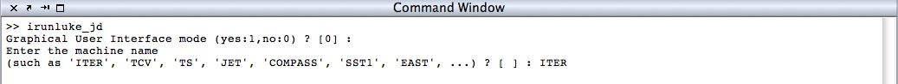
After typing RETURN, the main menu of the interactive mode appears, with a area displaying the status of the simulation.
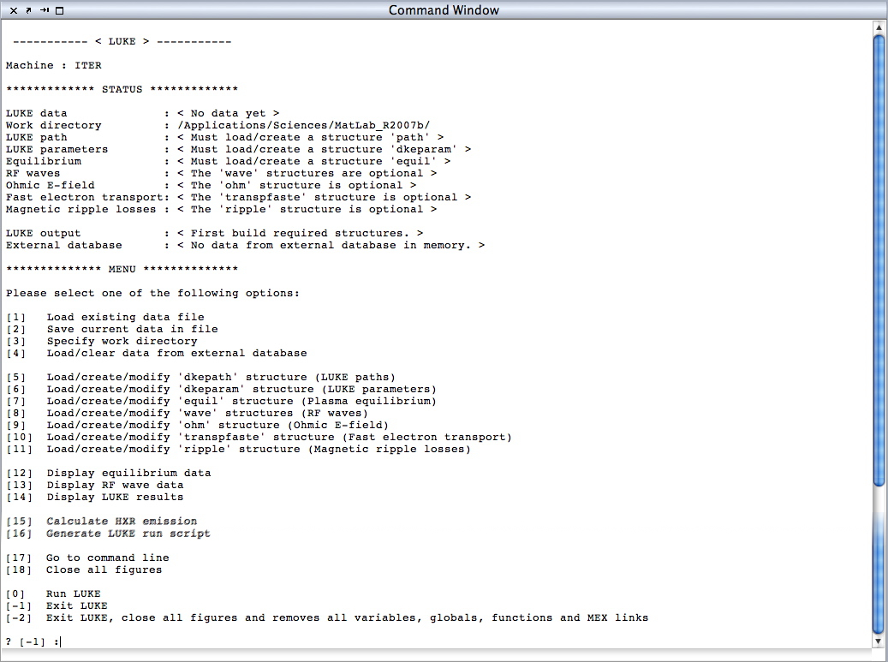
____________________
Load existing data file
Choose main menu item 1.
If no data file has been yet created, skip this section.
- Graphical User Interface mode 0. It is possible to navigate in the directory tree (double dot unix command) and select the data file in the list contained by the directory.
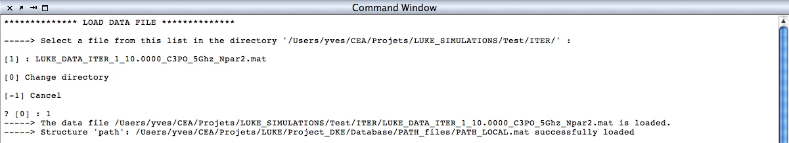
- Graphical User Interface mode 1. It is possible to navigate in the directory tree with the mouse and select the data file by just clicking of the 'Open' button.
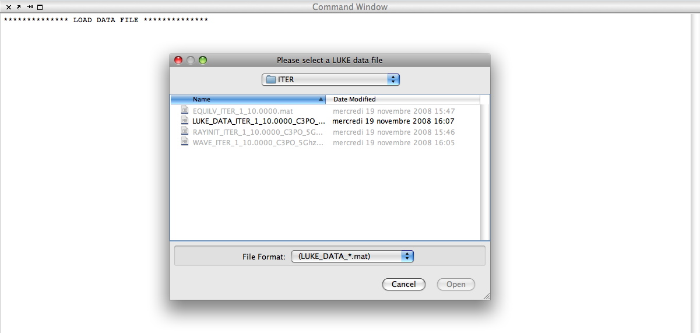
Once loaded, the status area is modified according to the last save step. The work directory is modified accordingly.
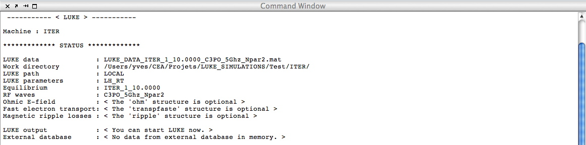
____________________
Specify work directory
Choose main menu item 3.
- Graphical User Interface mode 0. It is possible to select directly the work directory whose name is indicated by selecting option 1 (simple dot unix command), or to create a new one with option 0. In the latter case, the name of the new directory must be entered, and after typing RETURN, it must be confirmed that this new directory is the work one by selecting option 1 again. It is always possible to cancel the procedure by selecting option -1 (back to the main menu), change the work directory by selecting option 2, (double dot unix command) and navigate in the directory tree, or to create a new work subdirectory in the previously created one. Once confirmed, the main menu is displayed, and the work directory is indicated in the status area.
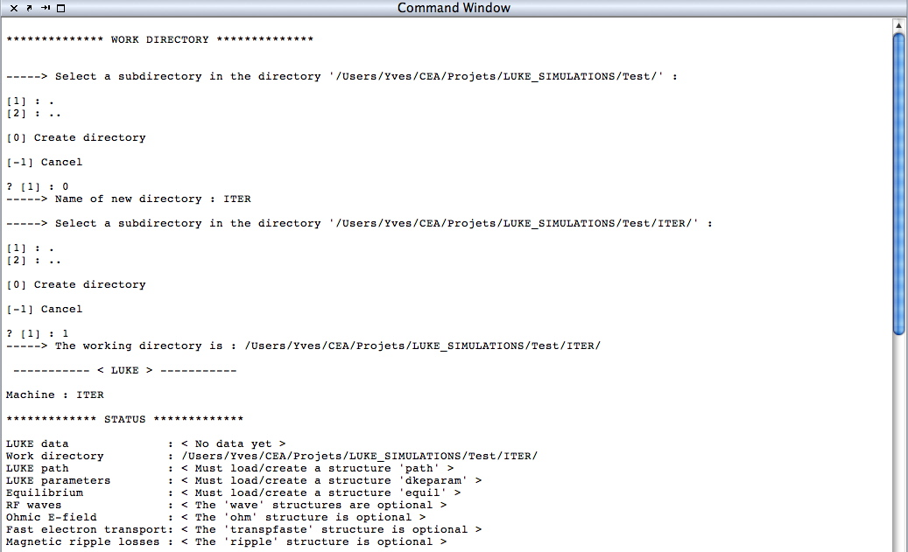
- Graphical User Interface mode 1. Here, it is assumed that the subdirectory 'Test/ITER' has already been created using MatLab desktop environment. It is selected as the work directory by just clicking of the 'Choose' button.
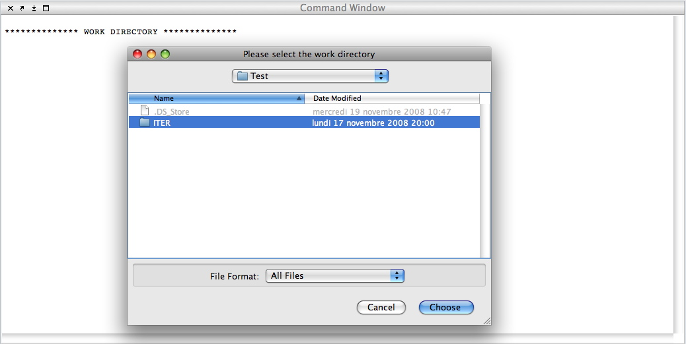
Afterwards, the Graphical User Interface mode 0 will be used, though this mode may always be used at all simulation steps.
____________________
Save current data in file
Choose main menu item 2.
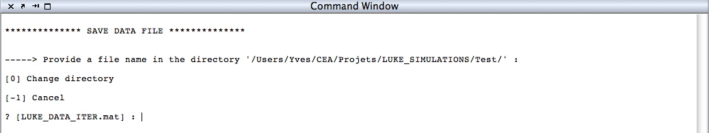
Type RETURN or another name of your choice before RETURN. All data of the simulation are saved in the LUKE_DATA_ITER.mat binary file. This action can be done anytime after each simulation step. It is recommanded to do it frequently, since in case of an unexpected exit of the program due to an unknown LUKE failure, all data which have not previously saved are simply lost !
Once defined, the work directory is indicated in the status area.
____________________
Load/create/modify 'dkepath' structure (LUKE paths)
Choose main menu item 5.
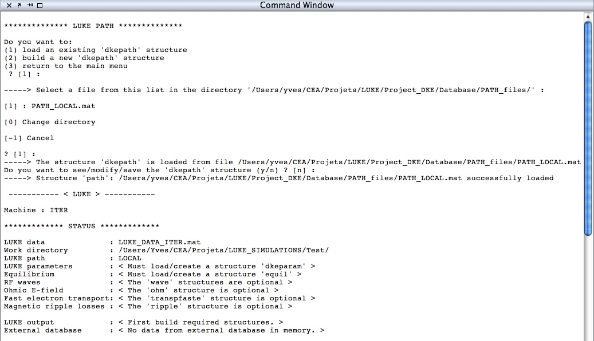
The 'dkepath' structure contains all paths needed for the simulation. It is set-up in the installation procedure of LUKE, and is machine dependent. It is possible to have several 'dkepath' structures, for remote computations. However, in most cases, simulations are performed localy, and the file PATH_LOCAL.mat must be selected. Only advanced users may have multiple 'dkepath' structures.
Once selected, the LUKE path is indicated in the status area.
____________________
Load/create/modify 'dkeparam' structure (LUKE parameters)
Choose main menu item 6.
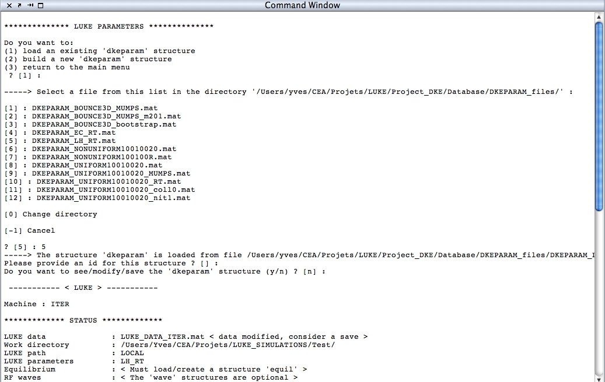
The 'dkeparam' structure contains a list of parameters which are optimized for a specific type of simulations. By default, the list of 'dkeparam' structures in the LUKE/Project_DKE/Database/DKEPARAM_files is displayed, and it is proposed to choose among them. For Lower Hybrid current drive simulations using ray-tracing, choose DKEPARAM_LH_RT.mat (menu item 5), and for Electron Cyclotron current drive studies, DKEPARAM_EC_RT.mat is more appropriate (menu item 4). When multiple types of rf waves are used, the choice of DKEPARAM_EC_RT.mat is recommended, since all harmonics are considered for the calculation of the quasilinear diffusion coefficient.
It is always possible to create a custom 'dkeparam' structure. However, it requires a deep knowledge of LUKE, and is not recommended except in case of very specific needs, like a refined mesh...
Once selected, the LUKE parameters are indicated in the status area.
____________________
Load/create/modify 'equil' structure (Plasma equilibrium)
Choose main menu item 7.
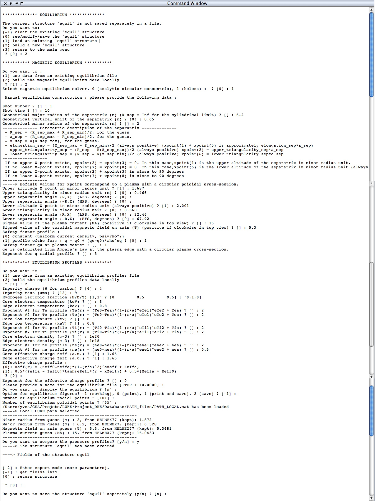
The 'equil' structure contains all data of the magnetic equilibrium required by LUKE. It can be loaded from a data file produced by an external equilibrium solver like EFIT, ACCOME or HELENA. An existing magnetic equilibrium already build for other LUKE simulations may be also reloaded. And, ultimately, the 'equil' structure may be build from scratch, using and ideal magnetic equilibrium model, or the built-in equilibrium solver HELENA (the fortran mex-file should have been compiled in the installation phase). In the example here presented, all data are given 'by hand' for an ITER case. Some parameters may be also directly loaded from a database (Tore Supra, TCV, JET,...) when it is interfaced with LUKE.
Once the magnetic equilibrium is determined, it is possible to check the consistency between the kinetic and magnetic pressure profiles as shown in the following picture.
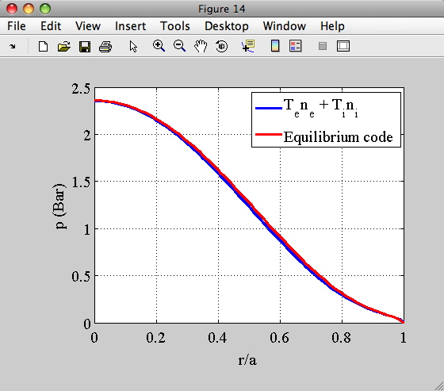
It is also possible to export the 'equil' structure in an independent *.mat file, which can be reused later for other purposes. The program suggests a name to the file, which contains the name of the machine, the shot number and the time slice. It is always possible to specify another name for the magnetic equilibrium file.
Finally, back to the main menu, it is recommended to save the 'equil' structure in the data file. In order to keep track more closely of the condition of the simulation for the magnetic equilibrium, the program suggests to rename the data file and adds the shot number and the time slice to the name of the machine. It is always possible to keep the previous name for the data file. If the name of the data file is modified, it is possible to delete the previous file, which becomes useless for the present simulation.
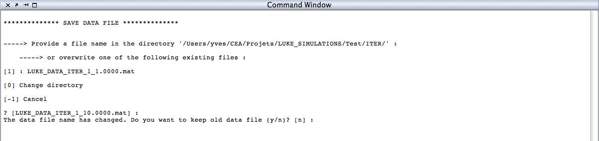
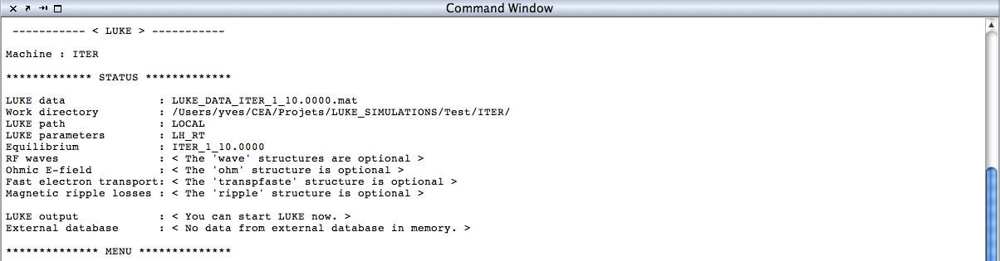
Once defined, the name of the magnetic equilibrium is indicated in the status area.
At this stage, it is possible to run LUKE by choosing the main menu item 0, as indicated in the status area. Choose main menu item 0 to run a LUKE simulation. Click here, to see log in the command window.
Whithout rf waves, Ohmic electric field, radial transport or magnetic ripple, the distribution function is simply a Maxwellian at all radial positions.
Once defined, choose main menu item 12 to display the magnetic equilibrium. Click here, to see the figures.
____________________
Load/create/modify 'wave' structures (RF waves)
Choose main menu item 8.
The 'wave' structure contains all the parameters of the rf waves launched into the plasma. An existing 'wave' structure may be loaded, or a new 'wave' structure may be created from scratch. This is the case for the example here considered concerning the Lower Hybrid wave.
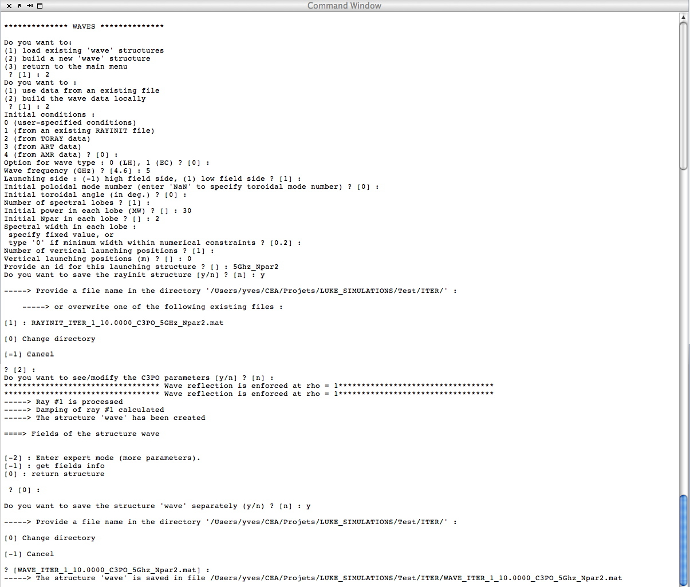
It is also possible to export the 'wave' structure in an independent *.mat file, which can be reused later for other purposes. The program suggests a name to the file, which characterizes the magnetic equilibrium and the wave parameter. It is always possible to specify another name for the rf wave file.
Finally, back to the main menu, it is recommended to save the 'wave' structure in the data file. In order to keep track more closely of the condition of the simulation for the magnetic equilibrium, the program suggests to rename the data file and adds the wave characteristics to the file name. It is always possible to keep the previous name for the data file. If the name of the data file is modified, it is possible to delete the previous file, which becomes useless for the present simulation.
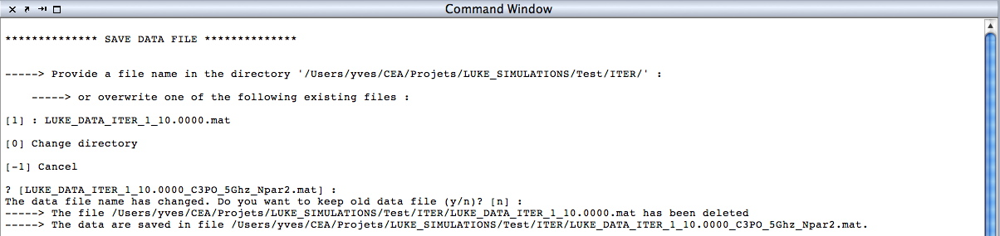
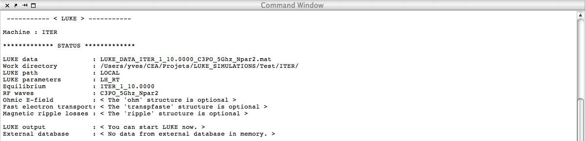
Once defined, the name of the rf waves file is indicated in the status area.
It is possible to run LUKE by choosing the main menu item 0, as indicated in the status area. Choose main menu item 0 to run a LUKE simulation. Click here, to see log in the command window.
Once defined, choose main menu item 13 to display some rf waves properties. Click here, to see the figures.
____________________
Load/create/modify 'ohm' structure (Ohmic E-field)
Choose main menu item 9.
The 'ohm structure contains all the parameters of the Ohmic electric field. An existing 'ohm' structure may be loaded, or a new 'ohm' structure may be created from scratch. This is the case for the example here considered, introducing a loop voltage in Volt. It can be also defined relative to the local Dreicer field. A flat profile is assumed for the interactive mode.
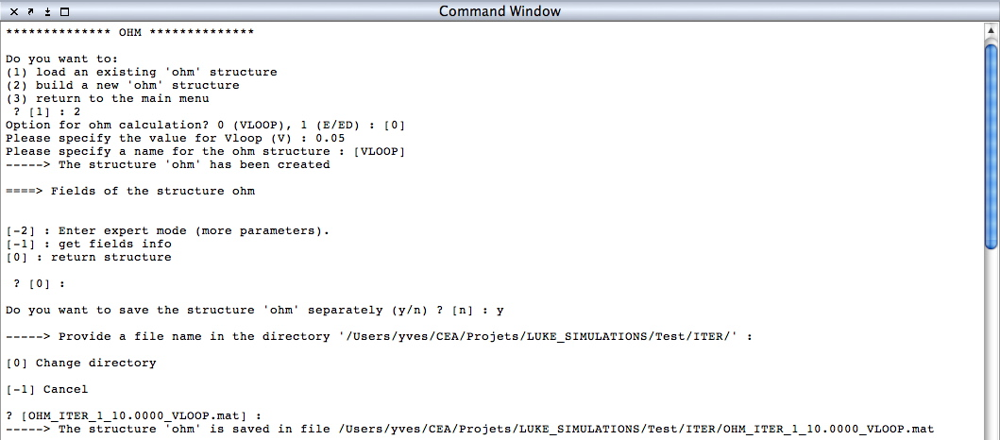
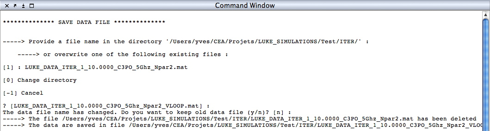
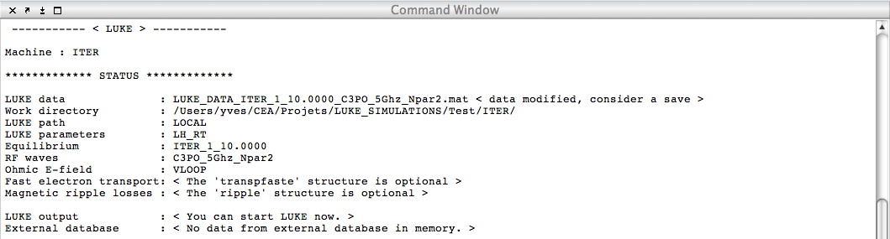
Once defined, the name of the 'vloop' file is indicated in the status area.
It is possible to run LUKE by choosing the main menu item 0, as indicated in the status area. Choose main menu item 0 to run a LUKE simulation. Click here, to see log in the command window.
____________________
Load/create/modify 'transpfaste' structure (Fast electron transport)
Choose main menu item 10.
The 'transpfaste' structure contains all the parameters of the radial transport of fast electrons. An existing 'transpfaste' structure may be loaded, or a new 'transpfaste' structure may be created from scratch. This is the case for the example here considered.
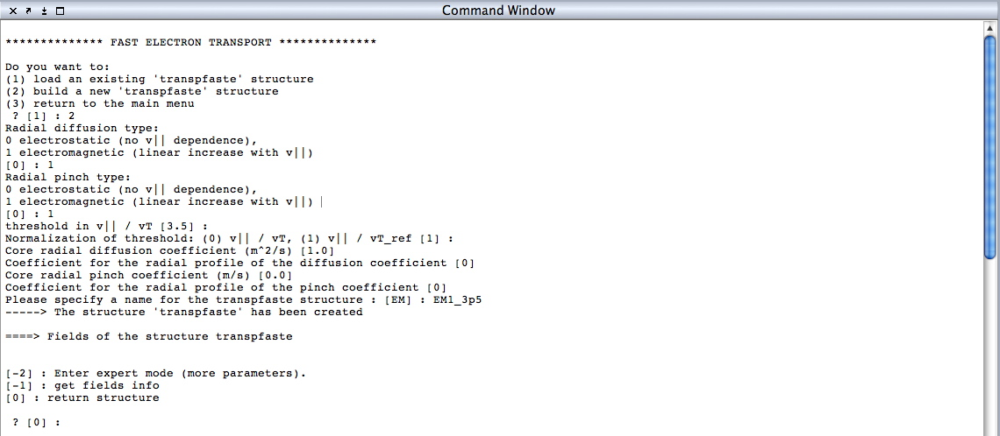
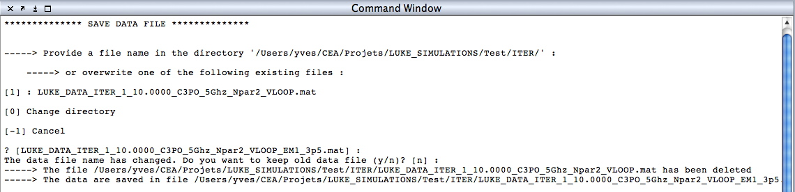
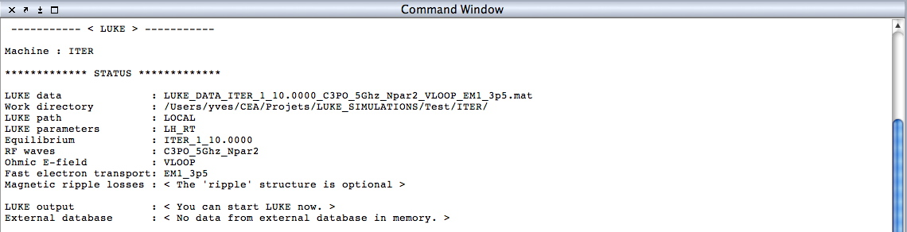
Once defined, the name of the 'transpfaste' file is indicated in the status area.
____________________
Load/create/modify 'ripple' structure (Magnetic ripple losses)
Choose main menu item 11.
____________________
Display equilibrium data
Choose main menu item 12.
Once the magnetic equilibrium is defined, it is always possible to visualize its main characteristics.
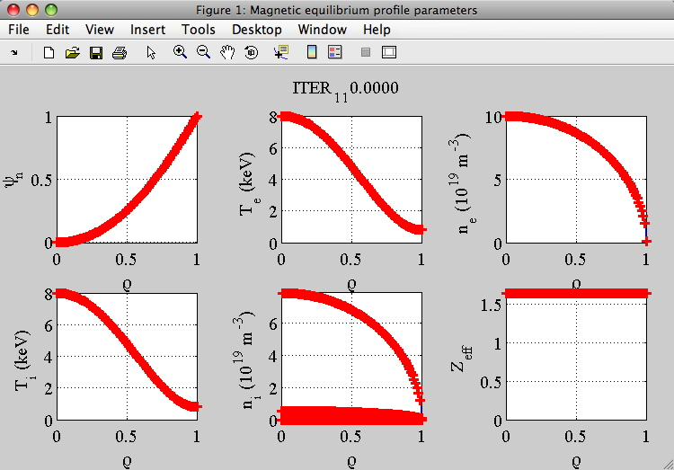
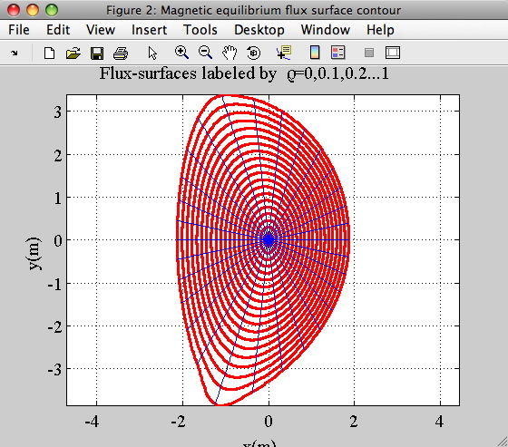
____________________
Display RF wave data
Choose main menu item 13.
Once the rf wave propagation is calculated, it is always possible to visualize its main characteristics. Each figure can be displayed independently, or all pertinent results may be displayed in one figure only.
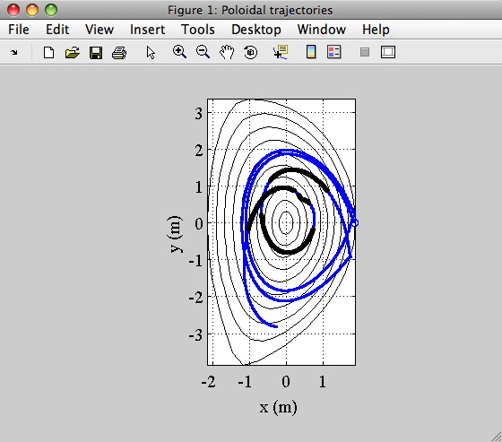
The location where colors change correspond to the place where absorption occurs.
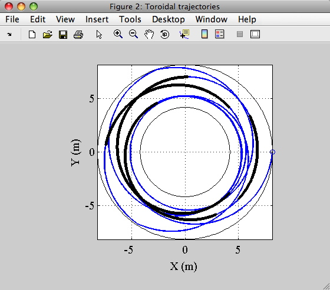
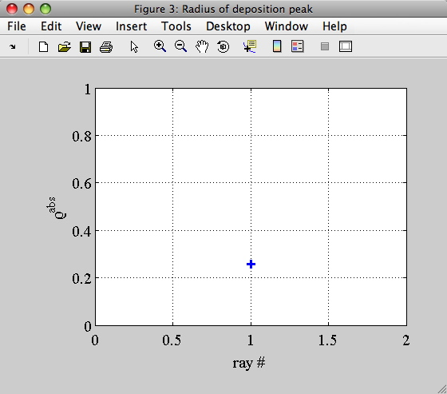
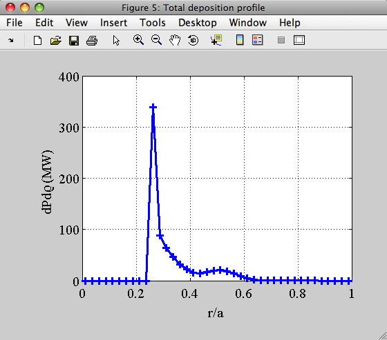
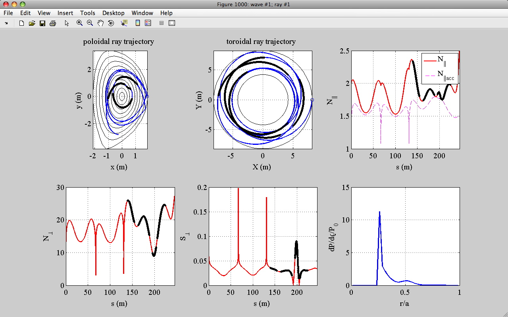
____________________
Display LUKE results
Choose main menu item 14.
____________________
Calculate HXR emission
Choose main menu item 15.
____________________
Generate LUKE run script
Choose main menu item 16.
____________________
Go to command line
Choose main menu item 17.
____________________
Close all figures
Choose main menu item 18.
____________________
Run LUKE
Choose main menu item 0.
The whole current drive calculation is performed, according to all parameters previously set-up. In this phase, the quasi-linear convergence is achieved in order to obtain a self-consistent
____________________
Exit LUKE
Choose main menu item -1.
____________________
Exit LUKE, close all figures and removes all variables, globals, functions and MEX links
Choose main menu item -2.
____________________